ggplot2 (Extending)
2022-12-18
Workbook for completing quizzes and exercises from the “Extending” chapters of ggplot2: Elegant Graphics for Data Analysis, third edition, with comparisons to solutions from Solutions to ggplot2: Elegant Graphics for Data Analysis.
library(ggplot2)
library(wesanderson)
library(scales)
library(maps)
library(dplyr)
knitr::opts_chunk$set(
comment = "#>",
fig.align = "center"
)Introduction
This workbook includes answers and solutions to the quizzes and exercises from ggplot2: Elegant Graphics for Data Analysis and Solutions to ggplot2: Elegant Graphics for Data Analysis, organized by chapter. It includes excerpts from both books, copied here.
WARNING, SPOILERS! If you haven’t read the ggplot2 book and intend to complete the quizzes and exercises, don’t read this notebook. It contains my (potentially wrong) answers to both.
19 Programming with ggplot2
A major requirement of a good data analysis is flexibility. If your data changes, or you discover something that makes you rethink your basic assumptions, you need to be able to easily change many plots at once. The main inhibitor of flexibility is code duplication. If you have the same plotting statement repeated over and over again, you’ll have to make the same change in many different places. Often just the thought of making all those changes is exhausting! This chapter will help you overcome that problem by showing you how to program with ggplot2.
To make your code more flexible, you need to reduce duplicated code by writing functions. When you notice you’re doing the same thing over and over again, think about how you might generalise it and turn it into a function. If you’re not that familiar with how functions work in R, you might want to brush up your knowledge at https://adv-r.hadley.nz/functions.html.
19.2.1 Exercises
- Create an object that represents a pink histogram with 100 bins.
Answer: pink_hist applied to the price of
diamonds.
pink_hist <- geom_histogram(bins = 100, fill = "pink")
ggplot(diamonds, aes(price)) +
pink_hist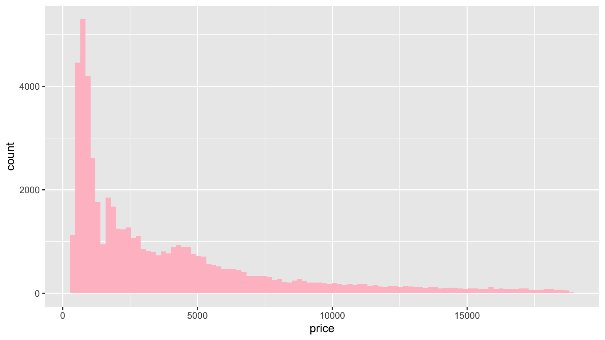
GG Solutions:
pink_hist_ggs <- geom_histogram(
color = "pink",
bins = 100
)Note: I think the intent here is to set fill, not
color.
- Create an object that represents a fill scale with the Blues ColorBrewer palette.
Answer: blues applied to a geom_bar()
example:
blues <- scale_fill_brewer(palette = "Blues")
ggplot(ggplot2::mpg, aes(class, fill = drv)) +
geom_bar() +
theme_classic() +
blues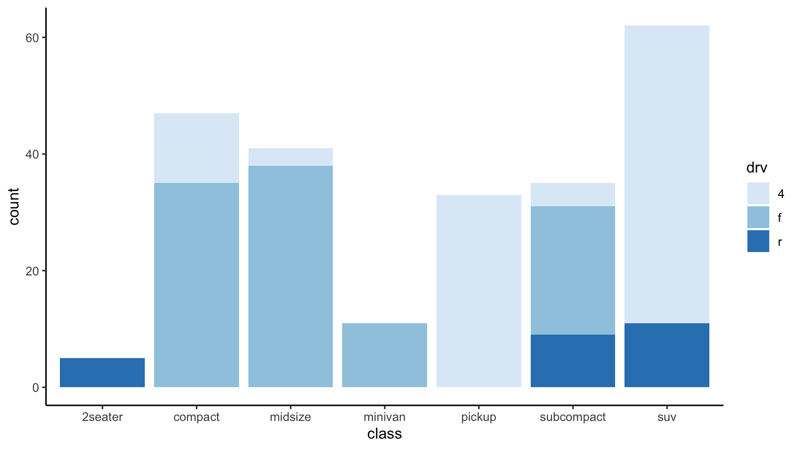
GG Solutions:
fill_blues <- scale_fill_distiller(
palette = "Blues"
)Note that the documentation states:
The
distillerscales extendbrewerscales by smoothly interpolating 7 colours from any palette to a continuous scale.
- Read the source code for
theme_grey(). What are its arguments? How does it work?
Answer: theme_grey() has 4 arguments:
base_size, base_family,
base_line_size, and base_rect_size. It
specifies a complete theme object, t, and uses the
%+replace% function to modify an internal global,
ggplot_global$theme_all_null using t.
theme_grey#> function (base_size = 11, base_family = "", base_line_size = base_size/22,
#> base_rect_size = base_size/22)
#> {
#> half_line <- base_size/2
#> t <- theme(line = element_line(colour = "black", linewidth = base_line_size,
#> linetype = 1, lineend = "butt"), rect = element_rect(fill = "white",
#> colour = "black", linewidth = base_rect_size, linetype = 1),
#> text = element_text(family = base_family, face = "plain",
#> colour = "black", size = base_size, lineheight = 0.9,
#> hjust = 0.5, vjust = 0.5, angle = 0, margin = margin(),
#> debug = FALSE), axis.line = element_blank(), axis.line.x = NULL,
#> axis.line.y = NULL, axis.text = element_text(size = rel(0.8),
#> colour = "grey30"), axis.text.x = element_text(margin = margin(t = 0.8 *
#> half_line/2), vjust = 1), axis.text.x.top = element_text(margin = margin(b = 0.8 *
#> half_line/2), vjust = 0), axis.text.y = element_text(margin = margin(r = 0.8 *
#> half_line/2), hjust = 1), axis.text.y.right = element_text(margin = margin(l = 0.8 *
#> half_line/2), hjust = 0), axis.ticks = element_line(colour = "grey20"),
#> axis.ticks.length = unit(half_line/2, "pt"), axis.ticks.length.x = NULL,
#> axis.ticks.length.x.top = NULL, axis.ticks.length.x.bottom = NULL,
#> axis.ticks.length.y = NULL, axis.ticks.length.y.left = NULL,
#> axis.ticks.length.y.right = NULL, axis.title.x = element_text(margin = margin(t = half_line/2),
#> vjust = 1), axis.title.x.top = element_text(margin = margin(b = half_line/2),
#> vjust = 0), axis.title.y = element_text(angle = 90,
#> margin = margin(r = half_line/2), vjust = 1), axis.title.y.right = element_text(angle = -90,
#> margin = margin(l = half_line/2), vjust = 0), legend.background = element_rect(colour = NA),
#> legend.spacing = unit(2 * half_line, "pt"), legend.spacing.x = NULL,
#> legend.spacing.y = NULL, legend.margin = margin(half_line,
#> half_line, half_line, half_line), legend.key = element_rect(fill = "grey95",
#> colour = NA), legend.key.size = unit(1.2, "lines"),
#> legend.key.height = NULL, legend.key.width = NULL, legend.text = element_text(size = rel(0.8)),
#> legend.text.align = NULL, legend.title = element_text(hjust = 0),
#> legend.title.align = NULL, legend.position = "right",
#> legend.direction = NULL, legend.justification = "center",
#> legend.box = NULL, legend.box.margin = margin(0, 0, 0,
#> 0, "cm"), legend.box.background = element_blank(),
#> legend.box.spacing = unit(2 * half_line, "pt"), panel.background = element_rect(fill = "grey92",
#> colour = NA), panel.border = element_blank(), panel.grid = element_line(colour = "white"),
#> panel.grid.minor = element_line(linewidth = rel(0.5)),
#> panel.spacing = unit(half_line, "pt"), panel.spacing.x = NULL,
#> panel.spacing.y = NULL, panel.ontop = FALSE, strip.background = element_rect(fill = "grey85",
#> colour = NA), strip.clip = "inherit", strip.text = element_text(colour = "grey10",
#> size = rel(0.8), margin = margin(0.8 * half_line,
#> 0.8 * half_line, 0.8 * half_line, 0.8 * half_line)),
#> strip.text.x = NULL, strip.text.y = element_text(angle = -90),
#> strip.text.y.left = element_text(angle = 90), strip.placement = "inside",
#> strip.placement.x = NULL, strip.placement.y = NULL, strip.switch.pad.grid = unit(half_line/2,
#> "pt"), strip.switch.pad.wrap = unit(half_line/2,
#> "pt"), plot.background = element_rect(colour = "white"),
#> plot.title = element_text(size = rel(1.2), hjust = 0,
#> vjust = 1, margin = margin(b = half_line)), plot.title.position = "panel",
#> plot.subtitle = element_text(hjust = 0, vjust = 1, margin = margin(b = half_line)),
#> plot.caption = element_text(size = rel(0.8), hjust = 1,
#> vjust = 1, margin = margin(t = half_line)), plot.caption.position = "panel",
#> plot.tag = element_text(size = rel(1.2), hjust = 0.5,
#> vjust = 0.5), plot.tag.position = "topleft", plot.margin = margin(half_line,
#> half_line, half_line, half_line), complete = TRUE)
#> ggplot_global$theme_all_null %+replace% t
#> }
#> <bytecode: 0x7fcd07f7d790>
#> <environment: namespace:ggplot2>GG Solutions:
- Its arguments include
base_size,base_family,base_line_size, andbase_rect_size - According to the help file,
theme_gray()is the signature ggplot2 theme with a grey background and white gridlines and is designed to put the data forward yet make comparisons easy.
- Create
scale_colour_wesanderson(). It should have a parameter to pick the palette from the wesanderson package, and create either a continuous or discrete scale.
Answer: to construct this function, it is helpful to review the code
for scale_color_brewer():
scale_color_brewer#> function (..., type = "seq", palette = 1, direction = 1, aesthetics = "colour")
#> {
#> discrete_scale(aesthetics, "brewer", brewer_pal(type, palette,
#> direction), ...)
#> }
#> <bytecode: 0x7fcd35733688>
#> <environment: namespace:ggplot2>The function is a wrapper for discrete_scale() and calls
scales::brewer_pal(), which is a function
factory:
scales::brewer_pal#> function (type = "seq", palette = 1, direction = 1)
#> {
#> pal <- pal_name(palette, type)
#> force(direction)
#> function(n) {
#> if (n < 3) {
#> pal <- suppressWarnings(RColorBrewer::brewer.pal(n,
#> pal))
#> }
#> else {
#> pal <- RColorBrewer::brewer.pal(n, pal)
#> }
#> pal <- pal[seq_len(n)]
#> if (direction == -1) {
#> pal <- rev(pal)
#> }
#> pal
#> }
#> }
#> <bytecode: 0x7fcd53b54ac8>
#> <environment: namespace:scales>First we construct a discrete scale, using Darjeeling1
as the default:
wesanderson_pal <- function(name, type) {
function(n) {
wes_palette(name, n, type)
}
}
scale_color_wesanderson_d <- function(..., name = "Darjeeling1", type = "discrete",
aesthetics = "colour") {
discrete_scale(aesthetics, "wesanderson_d", wesanderson_pal(name, type), ...)
}Note that these functions are limited by the number of colors in each
wesanderson palette (4-7), which will generate an error if more colors
are requested. The wesanderson_pal function could be
revised to auto-enable continuous or
scale_color_wesanderson_d() can be called with
type = "continuous".
For a continuous scale, it is helpful to review the code of
scale_color_viridis_c():
scale_color_viridis_c#> function (..., alpha = 1, begin = 0, end = 1, direction = 1,
#> option = "D", values = NULL, space = "Lab", na.value = "grey50",
#> guide = "colourbar", aesthetics = "colour")
#> {
#> continuous_scale(aesthetics, "viridis_c", gradient_n_pal(viridis_pal(alpha,
#> begin, end, direction, option)(6), values, space), na.value = na.value,
#> guide = guide, ...)
#> }
#> <bytecode: 0x7fcd13992f60>
#> <environment: namespace:ggplot2>We can add a continuous scale based using Zissou1 as the
default:
scale_color_wesanderson_c <- function(...,
name = "Zissou1",
type = "continuous",
values = NULL,
space = "Lab",
na.value = "grey50",
guide = "colourbar",
aesthetics = "colour") {
continuous_scale(
aesthetics, "wesanderson_c",
gradient_n_pal(wesanderson_pal(name, type)(length(wes_palettes[[name]])), values, space),
na.value = na.value, guide = guide, ...
)
}scale_colour_wesanderson_d() applied to an
mpg plot:
ggplot(ggplot2::mpg, aes(displ, hwy, color = drv)) +
geom_point() +
scale_color_wesanderson_d()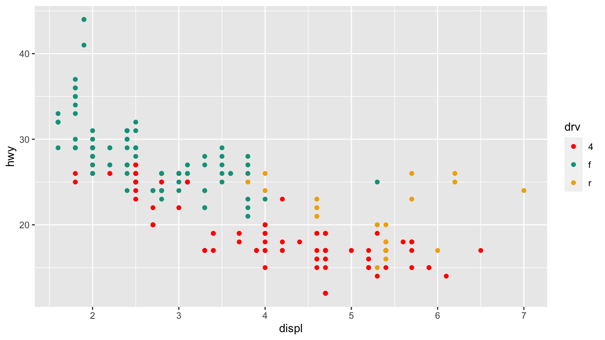
scale_colour_wesanderson_c() applied to an
mpg plot:
ggplot(ggplot2::mpg, aes(displ, hwy, color = cyl)) +
geom_point() +
scale_color_wesanderson_c()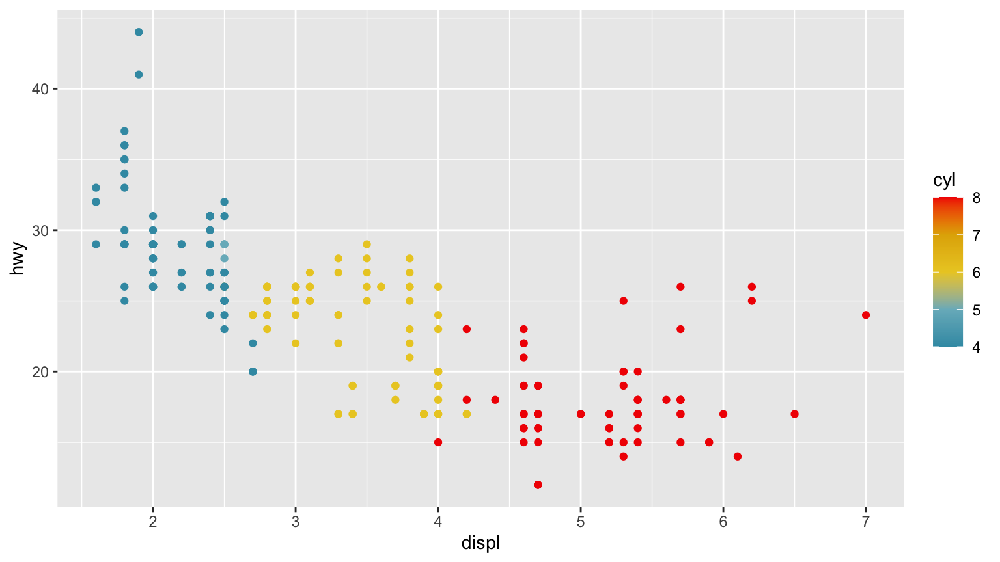
Notes: while the exercise calls for a single function, this breaks
the normal conventions for ggplot2. Such a function could be written by
combining scale_colour_wesanderson_d() and
scale_colour_wesanderson_c().
GG Solutions:
scale_colour_wesanderson <- function(palette = "BottleRocket1", ...) {
scale_color_manual(values = wesanderson::wes_palette(palette), ...)
}
# Working example
ggplot(mtcars, aes(wt, disp, color = factor(gear))) +
geom_point() +
scale_colour_wesanderson()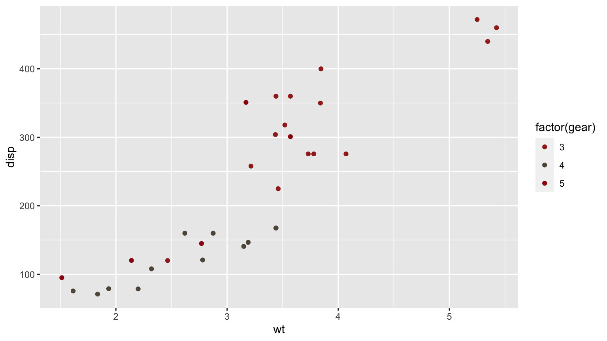
19.3.4 Exercises
- To make the best use of space, many examples in this book hide the axes labels and legend. I’ve just copied-and-pasted the same code into multiple places, but it would make more sense to create a reusable function. What would that function look like?
Answer: hide_ll() does this, demonstrated with an
mpg plot.
hide_ll <- function() {
list(
labs(x = NULL, y = NULL),
theme(legend.position = "none")
)
}
ggplot(ggplot2::mpg, aes(displ, hwy, color = drv)) +
geom_point() +
hide_ll()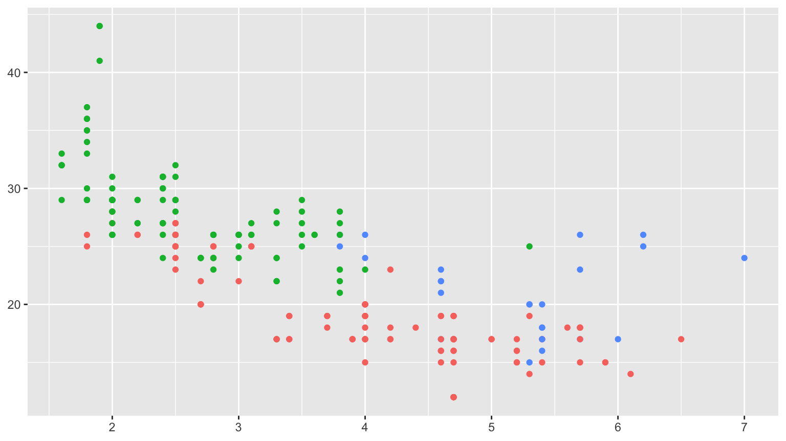
GG Solutions:
remove_labels <- theme(
legend.position = "none",
axis.title.x = element_blank(),
axis.title.y = element_blank()
)
# Working Example
ggplot(mtcars, aes(wt, disp, color = factor(gear))) +
geom_point() +
remove_labels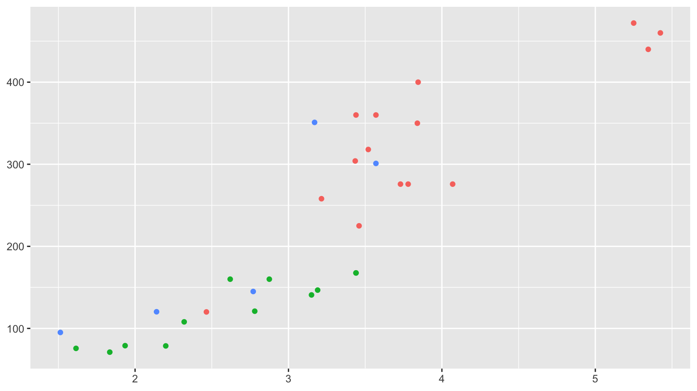
Note: the GG Solutions answer is more verbose, but uses only a single function call (theme).
- Extend the
borders()function to also addcoord_quickmap()to the plot.
Answer: borders_quickmap() implemented and demonstrated
using a borders() example. In this case, the function
passes all ... variables to borders() and none
to coord_quickmap() which avoids the complexity of handling
arguments for both functions.
borders_quickmap <- function(...) {
list(
borders(...),
coord_quickmap()
)
}
us.cities |>
filter(capital == 2 & !(country.etc %in% c("AK", "HI"))) |>
ggplot(aes(long, lat)) +
geom_point() +
borders_quickmap("state") +
theme_void()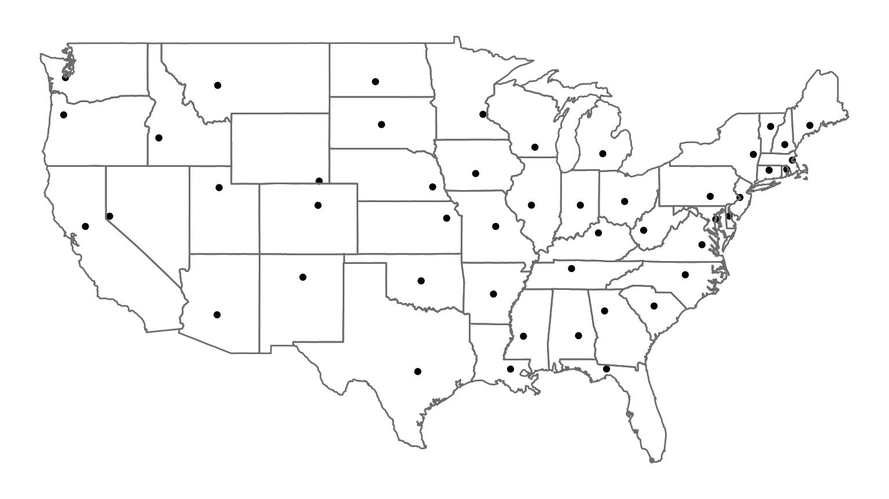
Note: because of the complexities, it’s unlikely I’d ever implement something like Additional arguments - there are minimal gains compared to calling two functions with separate lists of parameters.
GG Solutions: Not sure.
- Look through your own code. What combinations of geoms or scales do you use all the time? How could you extract the pattern into a reusable function?
Answer: a common pattern I use is geom_smooth with
lm and y ~ x. An implementation of this using
robust linear modeling from MASS is demonstrated below:
geom_rlm <- function(mapping = NULL, data = NULL, stat = "smooth", position = "identity", ...,
method = MASS::rlm, formula = y ~ x, se = TRUE,
na.rm = FALSE,
orientation = NA,
show.legend = NA, inherit.aes = TRUE) {
geom_smooth(
mapping = mapping, data = data, stat = stat, position = position, ...,
method = method, formula = formula, se = se, na.rm = na.rm, orientation = orientation,
show.legend = show.legend, inherit.aes = TRUE
)
}
ggplot(ggplot2::mpg, aes(displ, hwy)) +
geom_point() +
geom_rlm()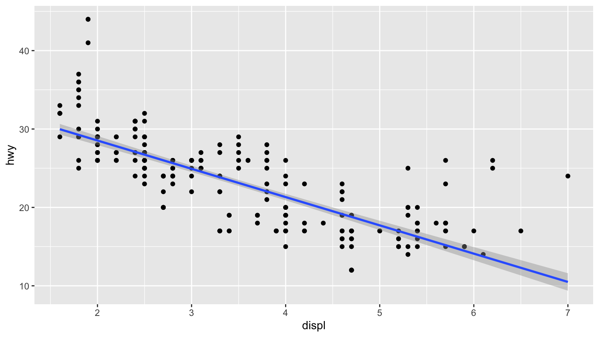
GG Solutions: no answer.
19.4.2 Exercises
- Create a
distribution()function specially designed for visualising continuous distributions. Allow the user to supply a dataset and the name of a variable to visualise. Let them choose between histograms, frequency polygons, and density plots. What other arguments might you want to include?
Answer: code below. In this case, it is useful to include
binwidth and bins, used in creating both
histograms and frequency polygons, and na.rm, used in all
three. Defaults to histogram.
distribution <- function(data, var, type = "histogram", binwidth = NULL, bins = NULL,
na.rm = FALSE) {
gg <- ggplot(data, aes({{ var }}))
if (type == "histogram") {
gg <- gg + geom_histogram(binwidth = binwidth, bins = bins, na.rm = na.rm)
} else if (type == "freqpoly") {
gg <- gg + geom_freqpoly(binwidth = binwidth, bins = bins, na.rm = na.rm)
} else if (type == "density") {
gg <- gg + geom_density(na.rm = na.rm)
} else {
stop("`type` must be histogram, freqpoly, or density")
}
gg
}
distribution(diamonds, price, binwidth = 100)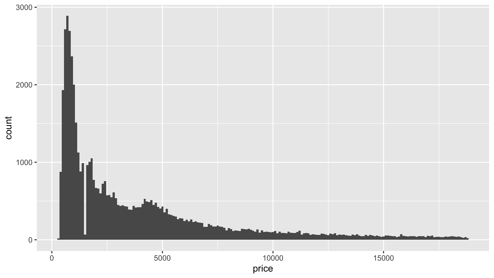
distribution(diamonds, price, type = "freqpoly", binwidth = 100)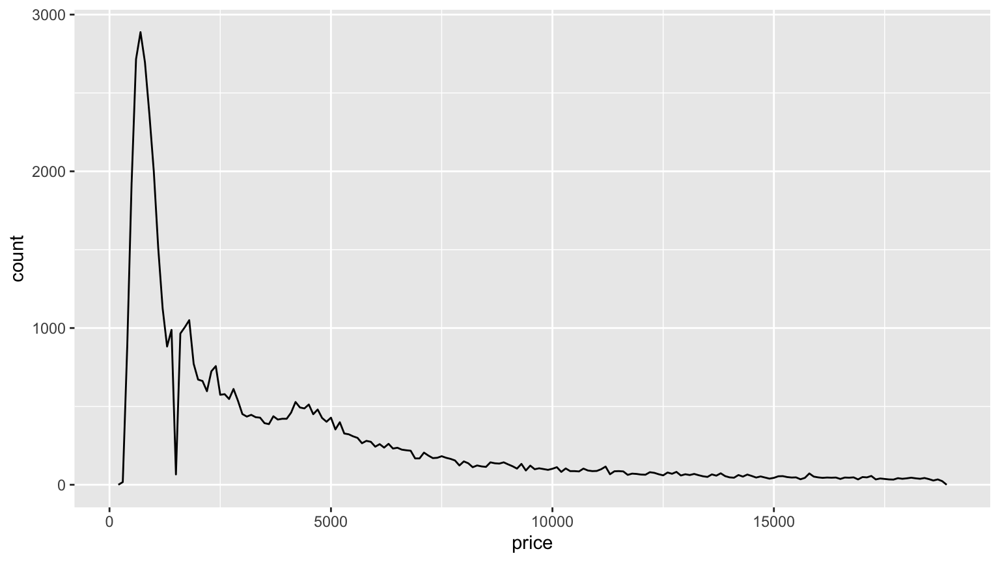
distribution(diamonds, price, type = "density")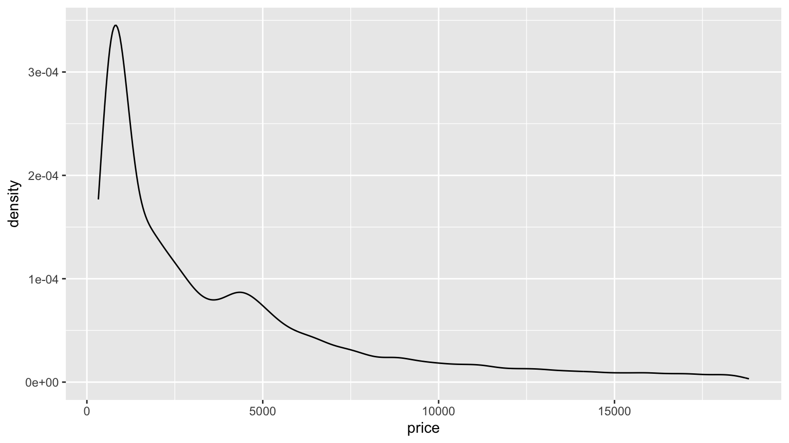
- What additional arguments should
pcp()take? What are the downsides of how...is used in the current code?
Answer: it would be useful to add arguments for the order of the
variables, and a scale adjustment for value, drawing from examples on Wikipedia.
Using ... for geom_line() prevents other
unnamed parameters from being passed to other functions, like
ggplot().
19.5.1 Exercises
- How could you add a
geom_point()layer to each element of the following list?
plots <- list(
ggplot(ggplot2::mpg, aes(displ, hwy)),
ggplot(diamonds, aes(carat, price)),
ggplot(faithfuld, aes(waiting, eruptions, size = density))
)Answer: easily done with lapply()`:
lapply(plots, function(g) g + geom_point())#> [[1]]
#>
#> [[2]]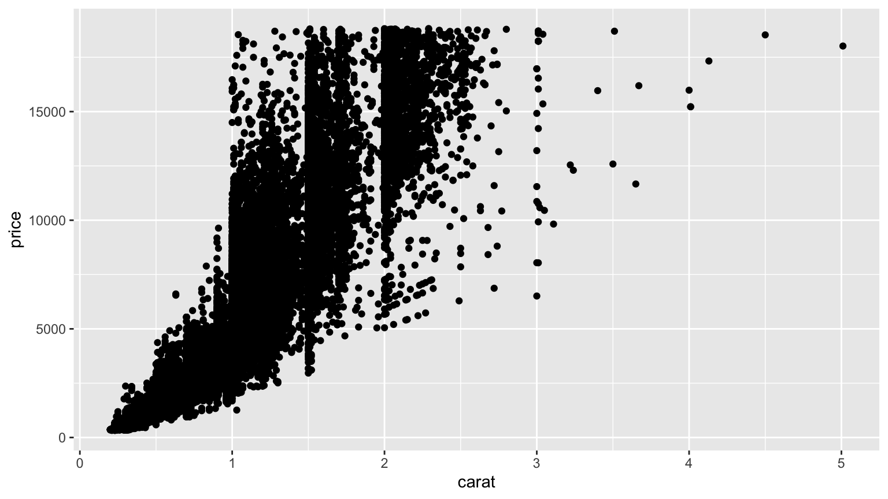
#>
#> [[3]]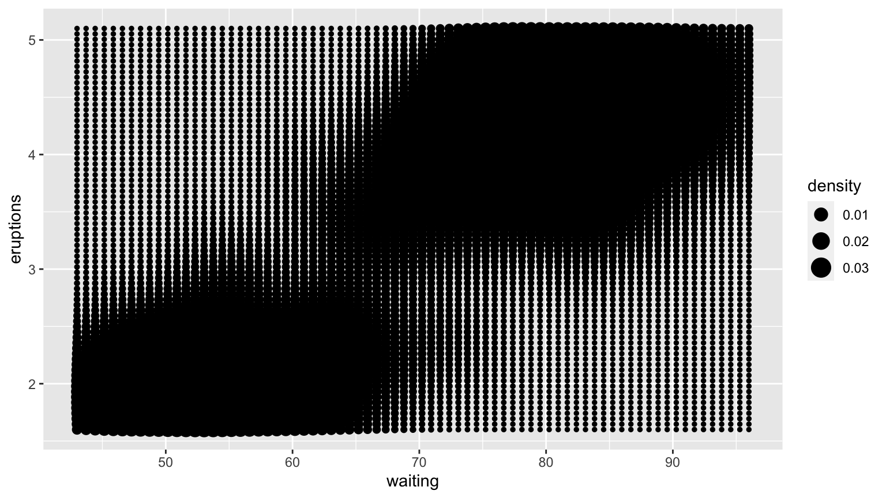
- What does the following function do? What’s a better name for it?
mystery <- function(...) {
Reduce(`+`, list(...), accumulate = TRUE)
}
mystery(
ggplot(ggplot2::mpg, aes(displ, hwy)) +
geom_point(),
geom_smooth(),
xlab(NULL),
ylab(NULL)
)#> [[1]]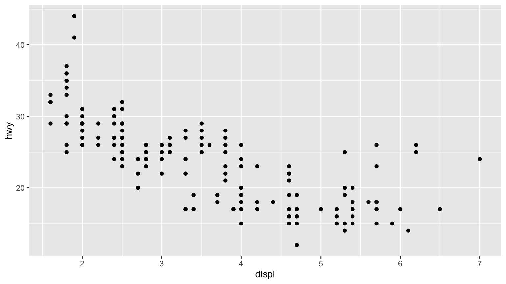
#>
#> [[2]]#> `geom_smooth()` using method = 'loess' and formula = 'y ~ x'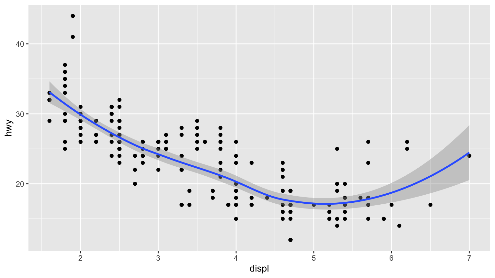
#>
#> [[3]]#> `geom_smooth()` using method = 'loess' and formula = 'y ~ x'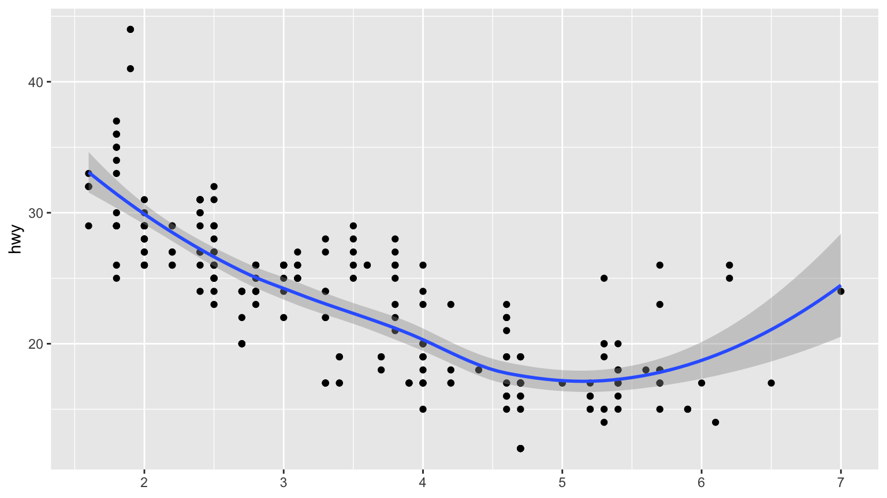
#>
#> [[4]]#> `geom_smooth()` using method = 'loess' and formula = 'y ~ x'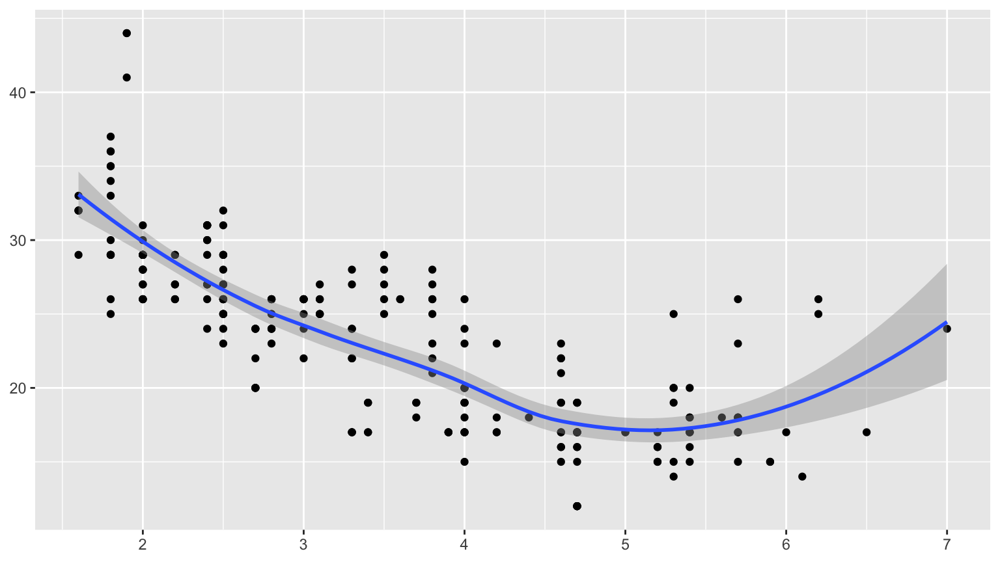
Answer: a better name would be ‘add layer and print’.